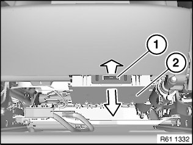
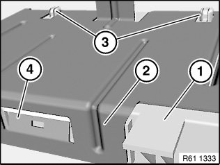

61 35 080 Removing and Installing/Replacing Control Unit/module for Left or Right Seat adjustment
61 35 080 Removing And Installing/replacing Control Unit/module For Left Or Right Seat Adjustment

IMPORTANT: Read and comply with notes on protection against electrostatic damage (ESD protection).

NOTE: Move seat completely towards rear/top.

Unlock metal lug (1) towards front and remove control unit/module for seat adjustment (2) towards bottom.
Disconnect all associated plug connections.

Installation:
Make sure control unit/module for seat adjustment (1) is correctly seated in mounting (2).
Guides (3) and metal lug (4) must not be damaged.

Replacement:
Carry out vehicle programming/encoding.